This vignette covers how to use the gtropic_plot()
function to turn the exposure data tables returned by
gtropic_data() into static exposure maps, exposure-count
maps, and storm-track maps, as well as interactive exposure and count
maps.
Plotting a single storm
Let’s begin by plotting Hurricane Katrina (2005):
katrina <- gtropic_data(
STORM_NAME = "Katrina-2005"
)
#> Discovering datasets in collection "gtropic".
#> Retrieving 0 files (0.0 B) ; 10 already cached.With the default 500 km radii applied to the wind, precipitation, and flood fields, the data we get back will only include those ADM2s within 500km of Katrina’s storm track. We’re also implicitly using the default precipitation and flood temporal windows (-2/+1 days).
Exposure maps
When we call the gtropic_plot() function and pass in
katrina, the default caption that gets rendered reminds us
of this by examining the data present in katrina:
gtropic_plot(katrina)
Specifying none of the optional arguments by default renders an
exposure map (implicitly, type = "exposure"), summarizing a
selected published metric for each ADM2. With
type = "exposure" and no provided metric, the
default is every available core metric in this order: maximum sustained
wind (VMAX_SUST_MS), cumulative precipitation
(PRECIP_MM), and maximum flooded area
(PROP_FLOODED_AREA). This makes the default plot a
multi-panel overview rather than a single-metric map. To see a list of
all the available exposure metrics and how they are summarized for
plotting, we can call:
gtropic_exposures()
#> $wind
#> # A tibble: 6 × 5
#> metric label unit aggregate plot_supported
#> <chr> <chr> <chr> <chr> <lgl>
#> 1 VMAX_SUST_MS Maximum sustained … m/s max TRUE
#> 2 VMAX_GUST_MS Maximum wind gust … m/s max TRUE
#> 3 SUST_DUR_MINUTES Sustained wind dur… minu… max TRUE
#> 4 GUST_DUR_MINUTES Wind gust duration… minu… max TRUE
#> 5 WIND_RADII_VMAX_SUST_MS Wind radii sustain… m/s max TRUE
#> 6 WIND_RADII_SUST_DUR_MINUTES Wind radii duratio… minu… max TRUE
#>
#> $precip
#> # A tibble: 1 × 5
#> metric label unit aggregate plot_supported
#> <chr> <chr> <chr> <chr> <lgl>
#> 1 PRECIP_MM Precipitation (mm) mm sum TRUE
#>
#> $flood
#> # A tibble: 3 × 5
#> metric label unit aggregate plot_supported
#> <chr> <chr> <chr> <chr> <lgl>
#> 1 PROP_FLOODED_POP Flooded population (propo… prop… max TRUE
#> 2 PROP_FLOODED_AREA Flooded area (proportion,… prop… max TRUE
#> 3 FLOODED_POP_CENTROID Flooded population centro… logi… any FALSEThe metric column let’s us know the available exposures,
and the aggregate column informs us how that metric is
summarized when plotted. For example, the PRECIP_MM metric
has a default aggregate value of sum, meaning our plot
visualizes the sum of each ADM2’s precipitation data over the temporal
window present the $precip data table we passed in to the
plotting function as part of katrina.
We can override how exposures are summarized using the
aggregate argument of the plotting function. For instance,
let’s compare plots showing each ADM2’s total precipitation recorded in
our temporal window,
gtropic_plot(
katrina,
metric = "PRECIP_MM",
aggregate = "sum"
)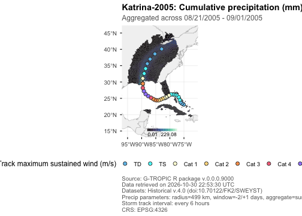
versus their maximum daily precipitation:
gtropic_plot(
katrina,
metric = "PRECIP_MM",
aggregate = "max"
)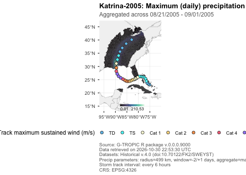
We can also swap out which exposure metrics we want to visualize:
gtropic_plot(
katrina,
metric = c("VMAX_SUST_MS", "VMAX_GUST_MS", "WIND_RADII_VMAX_SUST_MS"),
)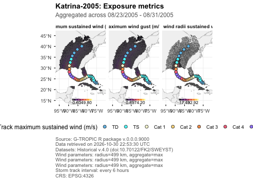
gtropic_plot(
katrina,
metric = c("SUST_DUR_MINUTES", "GUST_DUR_MINUTES", "WIND_RADII_SUST_DUR_MINUTES"),
)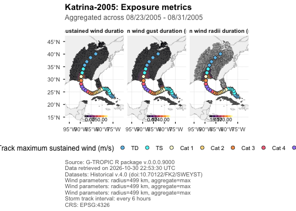
Take a look at the help page for the plotting function with
?gtropic_plot to examine other elements of the map you can
manipulate, for example, the basemap, or color
palette.
The metric, aggregate,
palette, and direction accept vectors aligned
by position. This makes a panel for each selected metric while
preserving a separate, hazard-appropriate scale for every panel.
gtropic_plot(
katrina,
type = "exposure",
metric = c("VMAX_SUST_MS", "PRECIP_MM"),
aggregate = c("max", "sum"),
palette = c("inferno", "mako"),
direction = c(1, 1),
track = FALSE,
basemap = "admin1"
)
Track maps
If we’re only interested in visualizing the storm track, then we can
set type = "track":
gtropic_plot(
katrina,
type = "track",
basemap = "admin1",
track_map_key = saffir_simpson(),
track_interval = 3,
)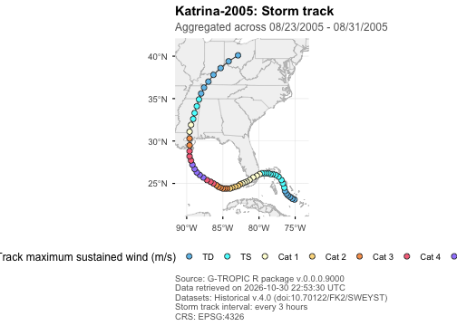
By default, their points are classified with
saffir_simpson(), which returns the conventional
Saffir-Simpson category key in meters per second. Supply a compatible
data frame to track_map_key to use a different
classification, and use track_interval to sample displayed
points at three- or six-hour UTC intervals while retaining the complete
path. Static wind legends always show every category in the supplied
key, even when no displayed track observation falls in a category.
Categorical ADM2 maps
If you’d like to categorize ADM2s into buckets defined by the wind
they’ve been exposed to, you can use the wind_categories
argument and pass in a table that looks like the one returned by
saffir_simpson():
saffir_simpson()
#> # A tibble: 7 × 4
#> category threshold unit color
#> <chr> <dbl> <chr> <chr>
#> 1 TD 17 m/s #6EC1EA
#> 2 TS 32 m/s #5FF
#> 3 Cat 1 42 m/s #FFFFD9
#> 4 Cat 2 49 m/s #FBDA8C
#> 5 Cat 3 58 m/s #F89F59
#> 6 Cat 4 70 m/s #F6738A
#> 7 Cat 5 Inf m/s #A188FC
gtropic_plot(katrina, wind_categories = saffir_simpson())
#> Error in `plot_resolve_wind_categories()`:
#> ! A bare `wind_categories` key requires exactly one selected metric.
#> ℹ For multiple metrics, supply a named list keyed by metric.The wind_categories argument classifies aggregated ADM2
wind exposure rather than drawing it on a continuous scale. It applies
to non-binary exposure maps for metrics in the wind table, including
interactive maps. For multiple selected metrics, use a named list keyed
by the selected wind metric or metrics to classify; metrics without a
supplied key retain their continuous fill. The built-in
saffir_simpson() key is permitted only for
VMAX_SUST_MS with aggregate = "max"; it
represents a local sustained-wind equivalent, not storm status. Use an
explicitly custom key for other wind metrics or aggregations.
Custom category keys use category,
threshold, unit, and color
columns. Categories must be unique; thresholds are strictly increasing
upper bounds ending in Inf; and unit must be
one arbitrary, nonempty, consistent value matching the source metric’s
unit. Conventional spellings of meters per second, such as
m/s and meters per second, are treated as
compatible. Values equal to a threshold belong to that category. Unlike
track_map_key, categorical exposure keys are not limited to
a fixed set of track-wind units. For example, this two-class key is
intentionally coarse:
two_class_wind <- data.frame(
category = c("Below hurricane", "Hurricane-force"),
threshold = c(32, Inf),
unit = "m/s",
color = c("#9ECAE1", "#DE2D26")
)
gtropic_plot(
katrina,
metric = "VMAX_SUST_MS",
wind_categories = two_class_wind,
track = FALSE
)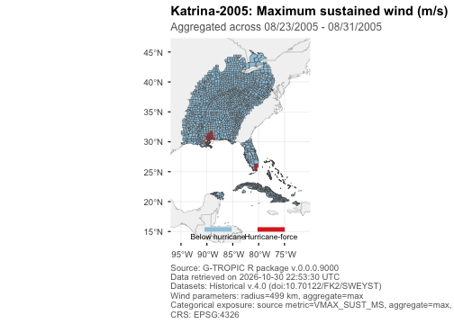
Interactive maps
Set interactive = TRUE for a Leaflet exposure or count
map. Interactive maps use vector layers and do not require a tile-server
API key. Static gridlines do not apply to this output because Leaflet
maps have no plot axes.
gtropic_plot(
katrina,
interactive = TRUE,
basemap = "none"
)Plotting multiple storms
Now let’s plot all the storms whose genesis date fell inside 2019, coming within 500km of India:
india_19 <- gtropic_data(
WHO_ENTITY = "India",
date_range = c(2019, 2019)
)
#> Discovering datasets in collection "gtropic".
#> Retrieving 0 files (0.0 B) ; 10 already cached.
india_19$storm_metadata
#> # A tibble: 7 × 4
#> STORM_ID STORM_NAME USA_ATCF_ID STORM_GENESIS_DATE_UTC
#> <chr> <chr> <chr> <date>
#> 1 2019116N02090 Fani-2019 IO012019 2019-04-25
#> 2 2019160N11073 Vayu-2019 IO022019 2019-06-08
#> 3 2019264N19071 Hikaa:hikka-2019 IO032019 2019-09-20
#> 4 2019296N15066 Kyaar:kyarr-2019 IO042019 2019-10-22
#> 5 2019301N05081 Maha-2019 IO052019 2019-10-28
#> 6 2019302N11118 Bulbul:matmo-2019 WP232019 2019-10-28
#> 7 2019337N11072 Unnamed-2019 IO072019 2019-12-02
gtropic_plot(india_19, type = "track")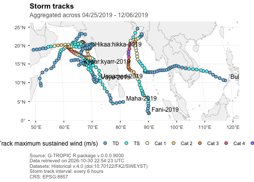
Let’s look at the maximum sustained winds each ADM2 was exposed to as a result of these storms:
gtropic_plot(india_19, metric = "VMAX_SUST_MS", track_labels = FALSE)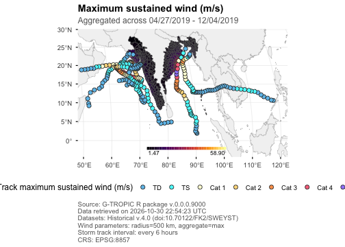
Or if the tracks are making it difficult for us to see the data clearly:
gtropic_plot(india_19, metric = "VMAX_SUST_MS", track = FALSE)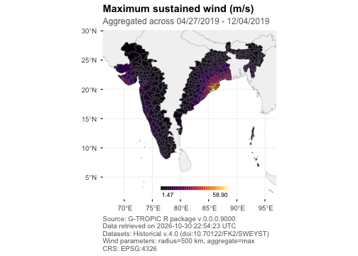
We can use the bbox argument to zoom in on a region of
interest:
gtropic_plot(
india_19,
metric = "VMAX_SUST_MS",
track = FALSE,
bbox = c(xmin = 82.5, xmax = 87.7, ymin = 17.5, ymax = 25),
expand = 0
)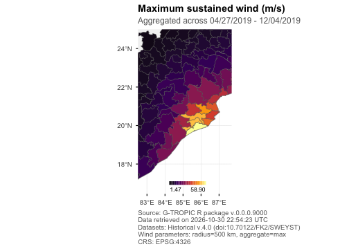
Count maps
Count maps apply metric-specific thresholds before counting the number of distinct storms or local exposure days that meet those thresholds. The automatic caption records the selected definitions.
gtropic_plot(
india_19,
type = "count",
count_unit = "days",
track = FALSE
)
gtropic_plot(
india_19,
type = "count",
count_unit = "storms",
track = FALSE
)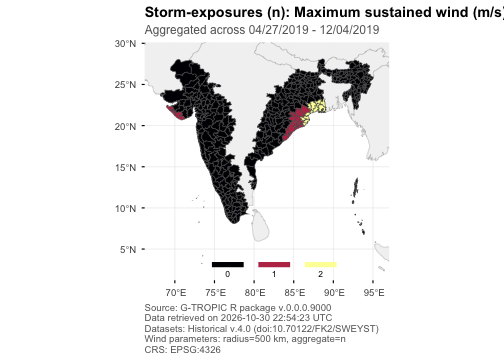
We can use the threshold argument to change how we
define an exposure:
gtropic_plot(
india_19,
type = "count",
metric = c("VMAX_SUST_MS", "PRECIP_MM"),
count_unit = "days",
threshold = list(VMAX_SUST_MS = 0, PRECIP_MM = 10),
track = FALSE
)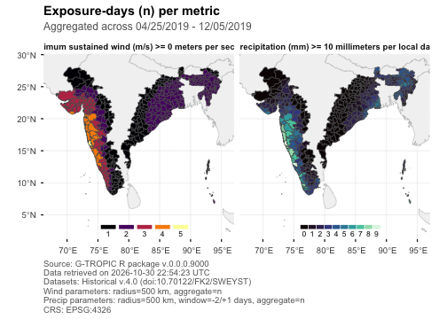
Saving plots
Static calls return ggplot objects, which can be extended with
ggplot2 layers and saved with gtropic_save() when the
analysis is ready for publication.
p <- gtropic_plot(
katrina,
type = "exposure",
metric = "VMAX_SUST_MS",
storm = "Katrina-2005",
basemap = "none"
) + theme_gtropic(base_size = 11)
gtropic_save(p, "katrina-wind-exposure.png", dpi = 300)Summary
-
gtropic_plot()produces exposure, count, and track maps directly from agtropic_dataobject. - Select metrics, aggregation methods, category keys, map extent, and track options to make the displayed exposure definition explicit.
- Static plots can be extended with ggplot2 and saved with
gtropic_save(); exposure and count maps can also be interactive.
Where to go next
-
vignette("getting-started")introduces data retrieval and the structure of G-TROPIC results. -
vignette("filtering")covers how all the spatio-temporal/storm filters ingtropic_data()combine. -
vignette("linkage")covers joining precipitation and flood records to storms before summarizing or mapping them. -
vignette("versions-and-caching")shows how to preserve the versions and source files behind a plotted result.